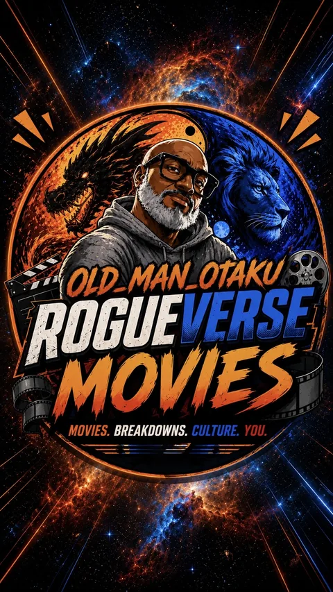
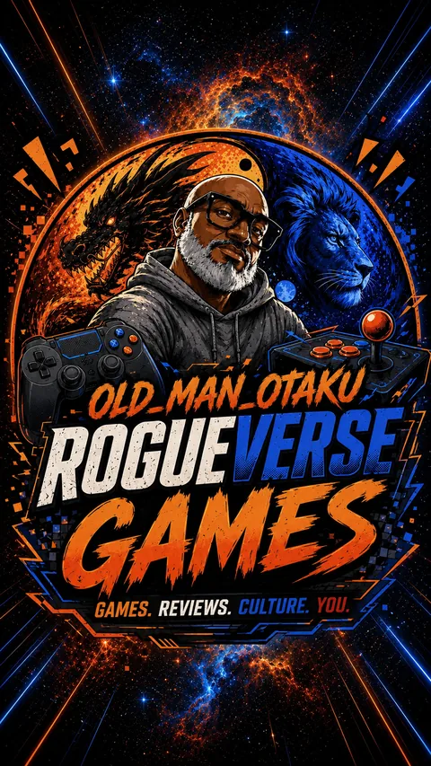
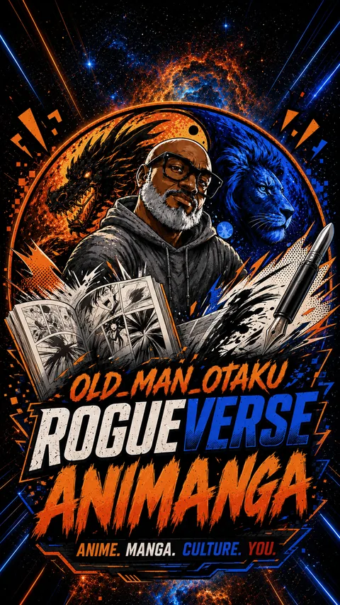

The signal, not the noise
ROGUEVERSE NEWS
Fast updates, deeper context, and the stories moving entertainment, culture, and our local world.

Movies, breakdowns, culture, you.
Games, reviews, culture, you.
Anime, manga, webtoons, and culture.Latest signal
LATEST ACROSS THE ROGUEVERSE
WEBTOON Bets ¥10 Billion on Japanese Originals. What Does That Mean for Creators?
A three-year investment plan, a proposed Japanese CANVAS launch, and a bigger push for international releases put original comics in focus.
ANIMANGA / INDEPENDENT CREATORSBookLife Opens Its Illustrated Prize to Indie Comics. Read the AI Rules Before Entering.
The competition offers a $5,000 overall grand prize and a December 15 deadline. Its AI policy and conflicting category-prize wording deserve a closer look.
ANIMANGA / ANIME FILMKaiju No. 8 Is Taking Its Anime Finale to Theaters in 2027
The conclusion will be a theatrical film. The format is confirmed; a precise Japanese opening date and international rollout remain unannounced.
ANIMANGA / COMICS & PUBLISHINGDungeon Crawler Carl Moves From Vertical Scrolls to Monthly Comic-Shop Issues
Vault’s January 2027 launch adapts the existing WEBTOON comic for a new reading format—and offers creators a useful publishing case study.
ANIMANGA / ANIME PRODUCTIONScience SARU Is Making Another Ghost in the Shell Animation Project
A fresh production has been announced following the 2026 television anime. Its format and release window are still under wraps.
ANIMANGA / MANGA ADAPTATIONSLook Back’s Live-Action Film Gets North American Dates—and a Story Artists Will Recognize
Hirokazu Koreeda’s adaptation opens in select theaters December 30, before a January 15 expansion. The creative relationship at its center makes it especially relevant to comic makers.
ANIMANGA / WEBTOONS & ANIMEWEBTOON’s Next Anime Wave Could Bring a Whole New Crowd to Comics
Crunchyroll, HAYATE and LINE Digital Frontier are developing around 15 potential adaptations. The bigger opportunity: anime viewers becoming comic readers.
MOVIES / INDUSTRYTom Holland Has a Spider-Man Handoff Plan—but He Is Not Leaving Yet
RogueVerse separates Holland's confirmed long-term vision from the Miles Morales inference and the premature retirement headlines.
MOVIES / REVIEWSpider-Man: Brand New Day Earns a 69/100 RogueVerse Movie Signal
We averaged exactly 50 professional reviews, separated recommendation rate from enthusiasm, and broke down the complete story.
DOCTOR WHO / ENTERTAINMENTJo Martin Takes Center Stage in Circuit Breaker
Big Finish has revealed the story, cast and release dates for the official Whoniverse event's two-hour audio finale.